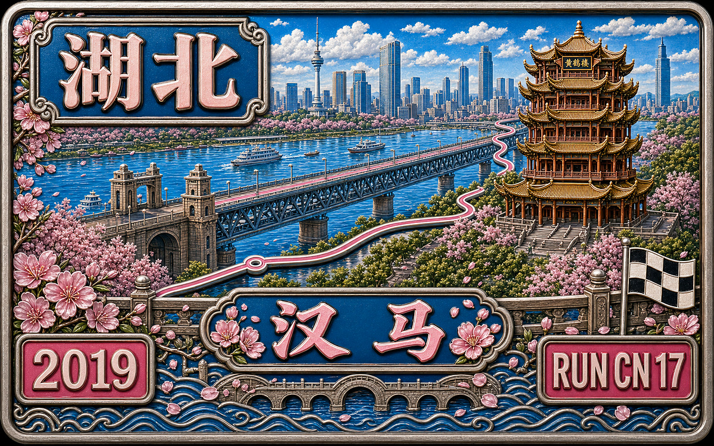

RUN50 DISPATCH · RUNCN
RunCN 第17站 · 武汉汉马 · 独家记忆
RunCN · 中国跑马故事
Vlog 开场位｜Runcn
OPENING NOTE
即将离开武汉的人，也会有乡愁。汉马、武大和江城三年的断片，被拼成一篇独家记忆。
本文速记
即将离开武汉的人，也会有乡愁。汉马、武大和江城三年的断片，被拼成一篇独家记忆。

奖牌质感封面｜Runcn


武汉，汉马，武大。 @Arsenan
如果不曾爱过武汉，生活怎么会幸福呢？
如果不曾跑过汉马，生活怎么能完整呢？

独家记忆 · 武汉
三年前，170多斤的东北小伙拽着个小到不能再小的箱子来到武汉，窗外飘雨，却热到发慌。
三年后，武汉成了他的第二个故乡。
对于即将离开武汉的人，也会有乡愁么？我想肯定会有吧，也许不是地理上的，而是心里上的。三年时光飞快，一帧一帧的翻出在这里曾经发生的故事，把那些引起共鸣的断篇，拼接起来，这就是乡愁。
作为来武汉读书的外乡人，虽然早已把这里当做了故乡，但临近毕业，不禁问自己，我究竟对这座城市了解多少呢？
武汉在我心中的样子，或许只是水苑餐厅里的豆皮花生露，粮道街的油饼包烧卖，菜市场的鸡丝凉面水煎包；是珞珈山老斋舍，东湖南路放鹰台，洪山广场螃蟹岬，武汉大学凌波门；或许也是硬朗豪爽，精明好斗，火气超大的武汉人。

武汉大学水苑餐厅豆皮。摄影/阿森男 @Arsenan
而江城的故事，却远比我的认知精彩得多。所以，在汉马的前一周，跳出自己的一亩三分地，和室友童哥约着，寻空到处走走，去探寻这座城市的独家记忆。
说起武汉，就不得不提那一碗热气腾腾的热干面，过早后，武汉人才真正的醒来，煮汤的铁锅揭开盖，白色雾气蒸腾，街坊邻居排着队相互打招呼，清晨的微风拂过老城里弄，吹来的芝麻酱香，是骨子里的记忆。其实我最开始对热干面并不感冒，没想到后来却也会学着本地人，到处探索路边小店，去寻找最正宗的武汉味道。蔡林记，曾麻子，张记，严记堂，武大各食堂，有武汉人的地方，就有热干面。

江汉路敏敏热干面。摄影/阿森男 @Arsenan

昙华林张记热干面。摄影/阿森男 @Arsenan
而除了热干面，老武汉的过早又怎么能少了老通城的豆皮、小桃园的瓦罐鸡汤、四季美的汤包、谈炎记的水饺、田恒启的糊汤米粉、厚生里的什锦豆腐脑、老谦记的牛肉枯炒豆丝、民生食堂的小小汤圆、同兴里的油香、民众甜食的汰汁酒……
也许，没有哪个地方的人，会像武汉人这样，爱一条江爱得这么赤裸，直接将城市的别称叫做“江城”，长江是这里最柔软的肌理，并因此蜿蜒出了一座城的宽广胸襟。可以说，武汉，最不缺的就是水。依水而居的先民们为与水争地、应对洪灾，自然养成了“天不怕地不怕”的蛮劲儿。信奉火神，以凤为尊的楚国，则在此创造出具有强大生命力的荆楚文明。

长江夜景。摄影/阿森男 @Arsenan

长江夜景及路过的知音号。摄影/阿森男 @Arsenan
因水而兴，因江而魅的武汉人与长江休戚与共。在老武汉的江边，码头是风景。轻飘的过江，豪侠的拜码头，骚浪的谈朋友……有水的地方便有码头，而有码头的地方便有江湖。码头上的祖祖辈辈，性子随流水，自由散漫，无拘无束，既贪恋“虚浮”，也爱闯荡江湖。江湖气浓厚的码头文化因此造就了武汉人火气大、爱骂人，蛮劲儿十足的个性。但火爆归火爆，同样在码头文化的滋养下，武汉人也足够直率真诚，义气十足。作为一个东北人，觉得很和胃口。

武汉码头。摄影/阿森男 @Arsenan

武昌中华路码头。摄影/阿森男 @Arsenan
回推历史的车轮，彼时的却月城（今汉阳）既是武汉历史上第一座军事城堡功能的城池，又是“导财运货，懋迁有无”的大港市，风光无限。在武昌汉口双雄争霸之前，这里才是武汉最时髦的地方，高山流水遇知音的古琴台和晴川历历汉阳树的晴川阁便坐落于此，并与一江之隔的黄鹤楼共称武汉三大名胜。千百年来，古琴台与晴川阁深深扎根于汉阳这片土地，也为探寻江城的来者们提供了一个支点。

古琴台。摄影/阿森男 @Arsenan

晴川阁。摄影/阿森男 @Arsenan
清末，亚洲最大的钢铁厂在汉阳诞生，这里生产的钢轨，直到2015年还在四川、陕西的铁轨上使用着，整整用了一百多年，可惜，汉阳城的命运没有钢铁坚固，1800岁的汉阳城在1927年军阀混战中，被夷为平地，现在早已不见踪影。再往后的故事，武汉飞速发展，而汉阳仍是一座安静的小城。过去十年里，关于武汉的都市传说有很多，但其中的99%，都与汉阳无关。也许只有在归元寺的繁盛香火里和汉阳造的武汉后工业时代气质里，才能依稀见到往日的盛景。

归元寺。摄影/阿森男 @Arsenan

汉阳造创意区。摄影/阿森男 @Arsenan
历史的车轮从不停歇，在与汉阳隔江相望的武昌，一个名为孙权的中年人率兵于蛇山修筑夏口，在城内的黄鹄矶上修建瞭望塔，取名黄鹤楼，自此，双城格局初具规模。立于蛇山之上的黄鹤楼，武汉人倒不怎么去，本地人常常调侃，集齐十个去过黄鹤楼的武汉本地人就能召唤神龙了。

黄鹤楼和长江大桥。摄影/阿森男 @Arsenan

武汉长江大桥 @Arsenan
而黄鹤楼旁边的户部巷武汉人也并不感冒，大家都说户部巷变得又贵又难吃，还不如自家楼下的小吃摊。“专骗外地人”，一句揶揄，可能也是大家心中的恨铁不成钢吧。昙华林倒是本地人外地人咸宜，在昙华林，市井气息和文艺气息充分地交融，一头是新兴的文艺小店，另一头则是老武汉的街角旮旯。

昙华林。摄影/阿森男 @Arsenan

昙华林。摄影/阿森男 · 2 @Arsenan
占据武汉半壁江山的武昌，她的血液无疑是红色的。起义门外，打响了辛亥革命第一枪，国民政府从此孕育。

起义门。摄影/阿森男 @Arsenan
而在蛇山南麓的红楼，则亲手为封建帝制敲响丧钟。透过红楼，我们仿佛穿过历史的长河，另一侧旗帜摇晃，起义将士们高声欢呼。而在如今的和平岁月里，彭刘杨路慢慢淡去了革命留下的印记。除去阅马场的那尊雕塑，岁月静好里，它变得更像是一条普普通通的小路，人来人往。

辛亥革命纪念馆。摄影/阿森男 @Arsenan

孙中山先生雕像。摄影/阿森男 @Arsenan
如今的武昌已蜕变成了人文气息浓厚，高校林立的中华智库。50万年轻人的朝气，映染了这片土地。原本武昌之名，源于孙权以鄂城为都时，改其名为武昌，寓“因武而昌”之意。而今日的武昌，因武而昌、以文而盛。

汉口江汉关。摄影/阿森男 @Arsenan
时间翻到500年前的明朝成化年间，一次特大洪水致使汉水改道，老汉阳至此一分为二，形成今天的汉阳和汉口。后来，汉口在明清时成为和北京，苏州，佛山齐名的“天下四聚”之一。到了民国，汉口更是成为名扬四海的“东方芝加哥”，在政治和经济上都登上了前所未有的高峰。而伫立于汉水之南的汉阳，则注视着对岸曾与他共生千年的汉口，相对无言。同时，在汉口堤角武汉肉联厂里的失落之塔，也远远地望着汉阳，破败了围墙。

失落之塔。摄影/阿森男 @Arsenan

失落之塔。摄影/阿森男 · 2 @Arsenan
最能代表汉口历史的，无疑是租界。漫步汉口江滩，一排排西式风格的建筑格外显眼。百年前的汉口，西洋人熙熙攘攘，租界外的中国人注视着里头，惊讶、好奇、愤怒，百感交集。在相当长的时间里，租界是伤口，是西洋人的“法外之地”。但租界也给当时的中国打开了一扇窗口，在这片小小的土地中，中国人直观地了解了西方的文化。有识之士们开始奋力疾呼，声音从租界里传出，响遍中华大地。今天的汉口，昔日繁闹的租借地已经变成了武汉人的休闲去处。老房子里不再是西洋面孔，而是年轻一代人的笑容。

江汉路步行街。摄影/阿森男 @Arsenan

江汉路步行街。摄影/阿森男 · 2 @Arsenan
江汉路上，数不清的小吃，逛不完的小店。中山大道，夜晚的霓虹如星光般璀璨，这里既保留了老武汉人的记忆，也成就了新武汉人眼里的繁华。既接纳西方文明，又不过分谄媚，武汉人的开放和率真在汉口尽数呈现。就连传统的佛教寺庙古德寺，都是满满的哥特风，与老汉口的西洋建筑遥相辉映。

江汉路步行街。摄影/阿森男 · 3 @Arsenan

中山大道上的汉口水塔。摄影/阿森男 @Arsenan

古德寺。摄影/阿森男 @Arsenan

古德寺。摄影/阿森男 · 2 @Arsenan
有两句著名的诗词抒写了一位青年在1927年的苦闷，“烟雨莽苍苍，龟蛇锁大江”，29年后，他故地重游，却欣然挥笔“一桥架南北，天堑变通途。”如今，十几座横跨两江的桥梁已成为了这座城市的骨架，撑起回家的车流，和其中匆忙回家的人。而年轻人最关心的则是，一起走过长江大桥的情侣究竟会不会分手？这至今仍是个谜团。但在桥上人行道的灯光之下，还会有年轻人相拥而过。桥上车水马龙，桥下是平静江水。

武汉长江大桥。摄影/阿森男 @Arsenan

鹦鹉洲长江大桥。摄影/阿森男 @Arsenan
一线贯通，两江交汇，三镇雄峙，四海呼应，五方杂处，六路齐观，七星高照，八面玲珑，九省通衢，十指连心。流水带走了光阴的故事，无意深刻，随江曲折，慢慢逶迤，使武汉成了传奇。

独家记忆 · 汉马
易中天的《读城记》——“城市是一本打开的书，不同的人有不同的读法。”对于踏上2019武汉马拉松赛道的选手来说，跑步就是他们阅读武汉这本书的方法——随着迈步前行，武汉的城市精华就像一卷画轴徐徐展开：浓缩了武汉城市商业文化基因与人文历史胎记的中山大道，令“天堑变通途”的万里长江上第一座铁路公路两用桥的长江大桥，以最能体现千湖之省、百湖之市婉约雅致的东湖绿道……跑一趟汉马，就仿佛完成了一场时空穿梭的旅行，见证江城百年来的历史变迁的同时，更能真切触碰到武汉的城市之魂。

武汉马拉松。摄影/阿森男 @Arsenan
汉马被称为马拉松界的武林大会，有口皆碑，今年的主题更是极具武汉特色的“江湖好汉”，所以汉马的中签率再创新低，基本和中彩票没区别。但就是这样一场充满仪式感的中彩票比赛，我连续参加了三年，无敌幸运。

江湖好汉。摄影/阿森男 @Arsenan
汉马对我的意义远非一场普通的马拉松，三年的武汉生活，三年的汉马记忆，这场燃爆全程的奔跑早已成了我生命中难以抹去的印记。汉马是我的跑步启蒙老师，因为2016年的汉马给了我一个理由，因此开始尝试跑步，这一跑就停不下来了。东湖，珞珈山成了我的最爱。最后甚至以武汉为圆心，辐射了大半个中国，借着跑步的名义，看了看这个世界。
红皇后假说有一句很著名的话：在这个国度中，必须不停地奔跑，才能使你保持在原地。马拉松赛跑中有一项注意细则，就是不要停下脚步，一旦停下脚步，之前忍耐的疲惫与疼痛就会席卷而来，在人生的马拉松上，也是这样，在舒适圈呆得久了，就难以重新起跑。对于半年多没有怎么系统跑步的我来说，赛前心里真的一直在打鼓，加之海口的退赛经历和刚刚踢球伤愈不久的身体状态，今年的汉马对我来说确实是不小的挑战。

地铁站里的汉马志愿者。摄影/阿森男 @Arsenan

地铁口为选手遮挡阳光的志愿者。摄影/ @Arsenan
内心慌张，赛前来到马博会，今年汉马给我的第一感觉依旧是气势恢宏，黄蓝相间的波马配色，江湖好汉的大气标语，让我觉得不完赛真的有点对不起这么好的马拉松。赛前领物秩序井然，从地铁站开始就会有志愿者一路引导，甚至志愿者们还会摘下自己的帽子为问路的选手遮挡阳光，会展内的志愿者们也会特别热情的告诉你领物的地点，有问必答，热情洋溢，是全方位的呵护。

汉马领物厅。摄影/阿森男 @Arsenan

汉马咨询处。摄影/阿森男 @Arsenan
领物之后的马博会，内容也特别丰富，刚进去我就很幸运的收到了个漂亮小姐姐送的冰淇淋，里面可以撸羊毛的地方还真不少，不论是场馆还是在里面穿梭的人，颜值颇高，再加上中国马拉松大满贯的展台金光熠熠，汉马的初体验，高端，大气，上档次。

冰淇淋小姐姐。摄影/阿森男 @Arsenan

长江日报记者采访。摄影/阿森男 @Arsenan

特步展台。摄影/阿森男 @Arsenan

汉马马博会。摄影/阿森男 @Arsenan
赛前我作为导游带着好友乐乐倩姐来武大打卡，不知不觉，自从跑步之后朋友圈里的好友一半都是爱跑步的了，他们对生活的热情也在无时不刻的感染着我。当一项运动脱离了竞技本身，生活便赋予它更多的意义。极赋社交功能的跑步，充分拓展了我的生活圈，也让我明白自己究竟该成为一个什么样的人。

康师傅标语。摄影/阿森男 @Arsenan
本次汉马的起点由汉口江滩改到中山大道三阳路口。外地跑友可能不知道这种改动要承担的巨大风险和责任，三阳路四周是老汉口居民的超级密集区，可见汉马组委会的十足魄力。13公里终点在武昌辛亥革命博物馆广场，半程终点在武昌公正路省图书馆门前，全程终点则设在欢乐大道欢乐谷门前。赛前武汉地铁为选手免费开放，并且会在早晨提前一小时。

存包。摄影/阿森男 @Arsenan

安检。摄影/阿森男 @Arsenan

起点处志愿者。摄影/阿森男 @Arsenan
比赛日，武汉天气微阴，并伴有小风，特别适合跑步，出了地铁站我还在找存包车，没想到旁边的志愿者非常热情的和我说：“不用找了，就在这啊！”很暖。分区起跑，每个区都有自己的厕所区域，非常方便。

起点处选手。摄影/阿森男 @Arsenan

起点。摄影/阿森男 @Arsenan
终于到了上午7:30，起点处鸣枪起跑，2.4万名江湖好汉一拥而出，狂欢开启。汉口这边的观众格外热情，穿越饱含沧桑历史的中山大道，可以感受老武汉的汉口风情。这里的每一个阳台或门廊，甚至是一砖一瓦可能都封印着一个故事，一段回忆。我边跑边用手机拍照，也不在乎配速，完全随心。

中山大道。摄影/阿森男 @Arsenan

汉马。摄影/懒人 @Arsenan
跑过中山大道，就接近了江汉桥。赛道从这里开始，浓缩了武汉作为江城以及历史文化名城最有代表性的元素。江、桥、楼、台，聚集于此，令人充分体会武汉人血液和性格中澎湃着的豪放和大气。

江汉桥。摄影/阿森男 @Arsenan

龟山电视塔下。摄影/阿森男 @Arsenan

清醒一下，承包了我一个下午的笑点。摄 @Arsenan
跨过长江大桥，迎面而来的便是中国三大名楼之一的黄鹤楼。昔人已去，高楼犹存，激发人们抚今追昔的情怀，选手们纷纷慢下脚步与黄鹤楼合影。

长江大桥赛道。摄影/阿森男 @Arsenan

黄鹤楼下。摄影/阿森男 @Arsenan

长江大桥下。摄影/阿森男 @Arsenan
下了大桥，渐渐下起了小雨，不过很舒服，没一会，13公里跑的终点辛亥革命纪念馆就到了。1911年，革命党人在这里打响推翻封建帝制的第一枪。武汉“敢为人先”的城市精神正是由此汲取。

友谊大道处志愿者。摄影/阿森男 @Arsenan

汉马。摄影/球哥 @Arsenan
继续向前跑，就来到汉马赛道第二处大上坡：沙湖大桥。它横跨沙湖，被武汉市民誉为“江城最美跨湖桥”。跑在沙湖大桥上，远远可见电影乐园、万达广场、汉秀剧场等新兴地标建筑，那里便是武汉有名的楚河汉街。没想到我在沙湖大桥上居然超过了400的兔子，有点意外。

沙湖大桥。摄影/阿森男 @Arsenan

电影乐园。摄影/阿森男 @Arsenan

汉秀剧场。摄影/阿森男 @Arsenan

东湖南路放鹰台。摄影/阿森男 @Arsenan
领略了楚河汉街的风尚，半马的选手就右转奔向终点湖北省图书馆了。而我们全马选手则继续前行，前方的湖光山色是汉马为全马选手们准备的又一份惊喜。只是东湖南路往日的武大尖叫赛道已不再尖叫，湖边的门都进行了管制，不见了武大学子的东湖南路温柔静谧，感觉很不一样。

东湖南路。摄影/阿森男 @Arsenan

东湖南路。摄影/阿森男 · 2 @Arsenan

东湖南路。摄影/阿森男 · 3 @Arsenan
跑过风光村，才算真正进入东湖赛道了，东湖之美举世闻名。如今的东湖，因为有了一期二期上百公里串成环的绿道，成为城市“绿心”。这里城湖相融、山水相依，长达百公里的绿色画廊，向选手们展示着武汉的婉约美。

风光村。摄影/阿森男 @Arsenan

东湖绿道。摄影/阿森男 @Arsenan

东湖绿道。摄影/阿森男 · 2 @Arsenan
就在去年，大大和印度总理莫迪在东湖边的一次握手，受到了世界的瞩目。其实大家一直在困惑，武汉马拉松这么火爆，为什么全马只有8000个名额，这主要是考虑到东湖绿道的承载能力，在动辄几万全程选手的全马时代，口碑卓越的汉马可以说是一股清流。

东湖绿道32km处。摄影/阿森男 @Arsenan

东湖绿道35km补给点。摄影/阿森男 @Arsenan
跑到东湖路段的35公里处，我也渐渐到了瓶颈，在补给点吃了两条能量胶，又重新活了过来。东湖最后的路段，曾侯乙编钟复制件、编磬、篪、笙、瑟，亮相汉马赛道的湖光序曲，并有专业人士为选手们演奏。本以为远古器乐将在耳边奏响，只是可能我跑的太慢了，乐师们只给我留下了一个背影，有点遗憾。

东湖绿道36.8km编钟表演。摄影/ @Arsenan
跑出东湖，路过华侨城，在摄影师的簇拥下，一路不减速地冲到了终点欢乐谷。

接近华侨城38km处。摄影/阿森男 @Arsenan

终点处汉马志愿者夹道迎接完赛选手。摄 @Arsenan
406的成绩，虽然和我的巅峰期差了不少，但能在时隔半年后再次完成全程马拉松，还是很开心。

汉马冲线。摄影/霖哥 @Arsenan

汉马冲线。摄影/万小玲 @Arsenan
终点遇到了一起跑过长沙马和厦马的兄弟浩彬，一起吃了终点的免费热干面，下午又一起爬了老斋舍绕了珞珈山。

完赛物品发放处。摄影/阿森男 @Arsenan

江湖劈叉好春丽。摄影/阿森男 @Arsenan
回首2019年的汉马，有太多瞬间值得铭记。作为人送外号“拍小姐姐专业户”的我，总想尽自己所能拍下志愿者们在赛道边的身影。他们凌晨三四点就从学校出发，到达岗位…他们分布在地铁，路口，起点，马拉松途中，终点，给选手提供引导，存放物品，递水，补给，救助选手，为跑者呐喊助威，卖力地做着一切力所能及的志愿服务。

永远在微笑的汉马志愿者。摄影/阿森男 @Arsenan

举着可爱标语的汉马志愿者。摄影/阿森 @Arsenan

摆渡车上的汉马志愿者。摄影/阿森男 @Arsenan
从第一分钟开始，到最后的关门，志愿者们都在声嘶力竭的为跑者们加油。赛后有朋友说：“我觉得志愿者很不容易的是，他们从300的选手到600的选手，一直都是那么热情，我们可能跑过去就是几秒钟，但他们可能已经在那里加油了几个小时了。”除了热情，志愿者们真的很专业，记得一位汉马志愿者曾说：“我们希望让大家看到武汉的热情与专业，虽然是递水，我们也要练习很多次，希望让他们接得舒心。”终点处，被两排志愿者簇拥着领过奖牌，内心依旧难以平复。

笑容灿烂的汉马志愿者。摄影/阿森男 @Arsenan

训练有素的汉马志愿者。摄影/阿森男 @Arsenan

欢迎选手完赛的汉马志愿者。摄影/阿森 @Arsenan
每去一个城市跑马，我都会寻找马拉松给这座城留下的痕迹，汉马的倾全城之力让我印象深刻。随处可见的标语，无比热情的市民。赛前赛后大家都会谈论着这场赛事。

随处可见的汉马标语。摄影/阿森男 @Arsenan

全民参与的热情赛事。摄影/阿森男 @Arsenan
下午我和浩彬在武大操场时，一位中年妈妈过来热情的打招呼:“你们是过来跑汉马的么？跑的怎么样啊？”“我可惜没中签，不过我好多朋友都跑了。”汉马已成了江城性格的一部分。

奖牌和武大牌坊。摄影/阿森男 @Arsenan

奖牌和樱顶。摄影/阿森男 @Arsenan

奖牌和老图。摄影/阿森男 @Arsenan
除了湖北省博物馆的乐手们敲响编钟为选手加油。汉马还有40多个超1000余人的音乐加油站亮。可以说，奔跑在汉马赛道上，每一步都不是孤单的。还有好多孩子乐团为大家演奏，近距离接触汉马文化的孩子们没准未来也会和我们一样，用脚步丈量对一座城的热爱。

小朋友乐队。摄影/阿森男 @Arsenan

小朋友乐队。摄影/阿森男 · 2 @Arsenan
伟大领袖毛主席教导我们：发展体育运动，增强人民体质，提高警惕，保卫祖国...红色血液的武汉也是具有体育基因的城市，今年是新中国成立70周年，办好军运会，也是对祖国七十华诞最好的献礼。“与军运同行”是汉马今年的主题和特色之一。赛道上可以看到很多军人在执勤，风里雨里，驻守岗位。除了军运会，下半年的男篮世界杯，武汉网球公开赛同样值得期待，喜欢足球的朋友也可以看看卓尔的中超比赛，近距离体验汉军的火爆激情。

汉马赛道上的军人。摄影/阿森男 @Arsenan

汉马马博会世界军人运动会展台。摄影/ @Arsenan
说到这，今年汉马的故事也就要结束了，赛后发了个汉马成绩的朋友圈，有朋友问我，这个佳明的头像是谁啊？我笑着和他们说：“是我啊，那是我没跑汉马之前的样子。”

佳明头像。摄影/寝室大爷 @Arsenan

汉马过线。摄影/何俊 @Arsenan
汉马也许就是这样吧，这既是一场数亿人目光穿越城市发展历程的奔跑，也同样是每位跑者不断发现自我突破极限的奔跑。这样的汉马，挺好的。

下一站，街道口
地铁二号线，下一站街道口，请前往武汉大学的乘客在本站下车……三年前选择来武大读研时，其实听到最多的并不是祝福，而是关于在武大读工科是否合适，东北人到底能不能适应武汉气候的大讨论。三年后，我为自己是个武大人而自豪。

武汉大学卓尔体育馆 @Arsenan

武汉大学鉴湖。摄影/阿森男 @Arsenan

武汉大学万林艺术博物馆。摄影/阿森男 @Arsenan
这里是中国最美的大学，没有之一，不接受反驳。从樱顶的日出到栈桥的日落，从清晨的珞珈山到傍晚的东湖畔，从午后万林的露台到雨后湿润的操场，处处都是风景。

武汉大学凌波门栈桥。摄影/阿森男 @Arsenan

东湖日落。摄影/阿森男 @Arsenan

武汉大学老斋舍。摄影/阿森男 @Arsenan
珞珈山是武大的图腾，而与武大相伴而生的东湖，则用她宽阔的臂膀将武大拥入怀中。武大享山水氤氲的灵气，而山水又承袭武大文化的底蕴，自然之秀与人文之灵融为一体，成就了最美的武大。

武汉大学珞珈山。摄影/阿森男 @Arsenan

东湖先月亭。摄影/阿森男 @Arsenan

东湖听涛。摄影/阿森男 @Arsenan
每年的春天，看一看来自全国各地数十万的游客，是每一朵武大樱花的执念，老斋舍下，樱花树静静生长。人们常说，武大的樱花开了，武汉的春天也就来了。

武汉大学樱花城堡。摄影/阿森男 @Arsenan

武汉大学夜樱。摄影/阿森男 @Arsenan
最爱的是周五晚上的梅操电影，买好饮料和零食，带上小板凳，顺着熙熙攘攘的人群来到那个萦绕着淡淡草木香气的地方，期待一段故事的开始。见证了无数银幕故事的梅操本身便是演绎着校园故事的舞台，看电影的人在这里欢笑、落泪、沉思，最终成了武大最动人的痕迹。

武汉大学梅操电影。摄影/阿森男 @Arsenan
武大自由的学风使她成了许多年轻人心中的乌托邦。在这里，我重塑了自己的世界观，也有幸遇到了两位知心的导师，他们引领我在科研的风口跋山涉水，亦教授我做人的道理。在师生矛盾频发的今天，何其幸运。

武汉大学行政楼。摄影/阿森男 @Arsenan

武汉大学逸夫楼。摄影/阿森男 @Arsenan

武汉大学文理学部图书馆。摄影/阿森男 @Arsenan
下课的钟声就要响了，图书馆的书也该还了，请原谅我没有想象中洒脱，这里有我爱的风景，也有我最想念的姑娘。作为直男，其实真的超级讨厌矫情的文字，但也请允许我记录下此时的情绪，好装进行囊。愿此去是星辰大海，归来仍是珞珈人。

武汉大学牌坊。摄影/阿森男 @Arsenan
最近喜欢上了从中南财大走出来的一对组合，房东的猫，尤其是那首《下一站茶山刘》。在故事的最后，就借用里面的歌词，来告别武汉的这三年吧。
如果世界真那么大
我就从这里出发
匆忙的脚步早已停不下
还没说完的话就算了吧
总有些遗憾要学会放下
和过去和解吧
我会像永远不变的时光
一如既往
哪怕从此离开了家乡
留言 / 访问次数
FIELD NOTE 01
跑完也说两句
Run50
不用注册账号即可提交留言，提交后会直接显示。
RUN50 FINISH LINE
这一站，收进地图。
即将离开武汉的人，也会有乡愁。汉马、武大和江城三年的断片，被拼成一篇独家记忆。 跑完这一篇，Run50 的故事又多了一块颜色。
17
RUN50
RUNCN
MARK
站
NOTE
如果这一站也勾起了你的某段跑步记忆，欢迎在公众号留言里接着聊。别太正式，像赛后坐下来喝一口水那样就行。
文字 / 编辑 / 排版 · Arsenan